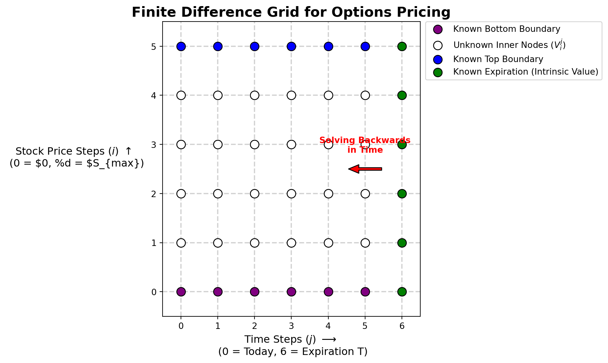

Options Research
Quantitative Finance
Python
OOP
Streamlit
Derivatives
featured
A summary of my research into options, including a payoff visualisation tool, a pricing calibration tool, and a look into the Black-Scholes numerical methods, among others.


Inception and Continued Direction of the Options Research
So, the research stemmed from a curiousity into options, how they work and how they are priced. At the start, i struggled to visualise the impact of combining a stock with a vanilla option, which lead to the first chapter, a streamlit dashboard that would help visualise the payoff profiles of different products put together.
A natural follow up was then, how is the pricing for these models being done? And thus i looked more into the base model for options which was Black-Scholes and how the equation was derived. You can read more about the research into Black-Scholes Derivation here.
During this research, i found that there were numerical and analytical methods to solve the Black-Scholes partial differential equation, and my notebooks on the Black-Scholes Numerical Methods here.
Once that was done and i had somewhat of an intuitive understanding of Black-Scholes, i then moved on to other pricing models, like Merton-Jump Diffusion, Merton, and Bates models, trying to calibrate them with the use of option data from WRDS. I tried to contrast Theoretical against Observed Option Pricing Models here.
Alternatively, I have included the subpages in this webpage below as well. Hope this helps.
Chapter 1: Streamlit Payoff Profile Visualisation
Chapter 2: Black-Scholes Numerical Methods
Chapter 3: Theoretical versus Observed Option Pricing Models
execute: eval: False —
Learning More About Option Pricing Models
Beyond the Black-Scholes model for options pricing, i realised that there were other models that I could use to try and price options, which included the Heston Model which accounts for stochastic volatility by treating variance as a random process that reverts to a long-term mean, rather than a constant, and the Merton Jump model which incorporates discontinuous “jumps” in asset prices using a Poisson process, allowing the model to account for sudden market shocks and “fat-tailed” distributions, as well as the Bates model which effectively merges the two by combining Heston’s stochastic volatility with Merton’s jump-diffusion components, aiming to capture both long-term volatility dynamics and short-term price spikes simultaneously.
In this article, i explore the use of the different models and the differences between them, as well as how real options data fit compared to the theoretical outcomes from each of the models.
Obtaining the Data and Data Cleaning
1. Data and Math Engines
For this project, i got the data from WRDS, mainly for the S&P500, and since most of the math was going to be repeated, i created a separate math_engine.py to run most of the code, keeping it separate from the jupyter notebook to prevent the notebook from becoming too cluttered. This code can be found in my github repo.
# ==========================================
# Imports and Setup
# ==========================================
# Magic commands for instant reloading of src code
%load_ext autoreload
%autoreload 2
import sys
import os
from pathlib import Path
from dotenv import load_dotenv
# 1. Dynamically find the root folder ('options-projects-suite')
# Path.cwd() is the 'projects/subfolder', so we go up two levels.
root_dir = Path.cwd() / "_options-projects-suite"
# 2. Add root to system path so Python can find the 'src' package
if str(root_dir) not in sys.path:
sys.path.append(str(root_dir))
# 3. Load the .env file explicitly from the root directory
load_dotenv(root_dir / ".env")
# ==========================================
# Imports required for this project
# ==========================================
# Numerical and Data Analysis
import numpy as np
import pandas as pd
# Visualization
import matplotlib.pyplot as plt
import seaborn as sns
import plotly.graph_objects as go
import plotly.colors as pcolors # Import Plotly's color module
from mpl_toolkits.mplot3d import Axes3D
# Statistics and Integration
import scipy.stats as si
from scipy.integrate import quad
# Interactive Widgets and Notebook Display
import ipywidgets as widgets
from IPython.display import display, clear_output, Markdown
from IPython.display import HTML
import warnings
from datetime import datetime
# Import your newly structured packages
from src.data.option_data_loader import MarketDataLoader
from src.models.option_pricing_math_engine import bs_call_price, implied_volatility
# ==========================================
# Importing data from the WRDS option directory specified in the .env file
# ==========================================
# Fetch the WRDS directory from your .env
env_path = os.environ.get("DATA_DIR")
if not env_path:
raise ValueError("DATA_DIR not found. Check your .env file!")
# Build the exact path to the options data
options_dir = Path(env_path) / "WRDS Data" / "Options Data"
# Initialize the loader (this will trigger your print statements and load the df)
loader = MarketDataLoader(options_dir)
# ==========================================
# Parameters and extracting the strikes required
# ==========================================
# Set plotting style
sns.set_style("darkgrid")
plt.rcParams['figure.figsize'] = (12, 6)
# Parameters for simulation
S0_sim = 100 # Initial stock price
mu_sim = 0.08 # Expected return (drift)
sigma_sim = 0.20 # Volatility
T_sim = 1.0 # Time horizon (1 year)
dt_sim = 1/252 # Daily steps
num_paths = 15 # Number of simulated paths to plot
# 1. Explicitly define your scenario variables so the plotter can see them later
TARGET_DATE = '2024-01-10'
TARGET_EXDATE = '2024-02-16'
# 2. Feed them to the loader to get the exact state
state = loader.get_market_state(TARGET_DATE, TARGET_EXDATE, strike_bound_pct=0.10)
# 3. Extract the variables for the optimizer
S0, T, r, q = state['S0'], state['T'], state['r'], state['q']
market_strikes, market_prices = state['strikes'], state['prices']
# 3. Calculate Market IVs
target_ivs, valid_strikes = [], []
for i, K in enumerate(market_strikes):
iv = implied_volatility(market_prices[i], S0, K, T, r, q)
if not np.isnan(iv):
target_ivs.append(iv)
valid_strikes.append(K)
num_strikes = len(market_strikes)
valid_strikes = np.array(valid_strikes)
target_ivs = np.array(target_ivs)
# 1. Calculate the difference in days
d1 = datetime.strptime(TARGET_DATE, '%Y-%m-%d')
d2 = datetime.strptime(TARGET_EXDATE, '%Y-%m-%d')
days_diff = (d2 - d1).days
print("-" * 50)
print(f"✅ Market State Loaded Successfully")
print(f"📅 Target Date: {TARGET_DATE}")
print(f"⏳ Expiry Date: {TARGET_EXDATE} ({days_diff} days)")
print(f"📊 Liquid Strikes: {len(valid_strikes)} (within 10% bound)")
print("-" * 50)Monte Carlo Simulation of stock prices using a log-normal random walk with constant drift and volatility
To build an intuition for the Black-Scholes environment, we first simulate the underlying asset’s behavior using Geometric Brownian Motion (GBM). This Monte Carlo simulation projects multiple potential asset paths over a 1-year horizon, governed by a constant drift and volatility.
It visually reinforces the core Black-Scholes assumption: asset prices follow a log-normal random walk where returns are continuous and normally distributed.
from src.models.option_pricing_math_engine import simulate_gbm
# 1. Run the corrected simulation
t_steps, paths = simulate_gbm(S0_sim, mu_sim, sigma_sim, T_sim, dt_sim, num_paths)
# 2. Build the figure
fig = go.Figure()
x_flat = np.array(t_steps).flatten()
for i in range(num_paths):
# Change Scattergl to Scatter if the red box persists in your environment
fig.add_trace(go.Scattergl(
x=x_flat,
y=np.array(paths[i, :]).flatten(),
mode='lines',
line=dict(width=1.5),
opacity=0.7,
name=f'Path {i+1}',
showlegend=False
))
fig.update_layout(
title='Monte Carlo Simulation of Asset Paths (GBM)',
xaxis_title='Time (Years)',
yaxis_title='Asset Price',
template='plotly_white',
hovermode='closest',
width=None,
height=500
)
fig.show()Black-Scholes Call Pricing & The Greeks
Next, we use the Black-Scholes closed-form solution for european options to visualise how the “Big Five” Greeks (\(\Delta\), \(\Gamma\), \(\Theta\), \(\nu\), \(\rho\)) change against the underlying
By visualizing these simultaneously, we can analyze the multi-dimensional risk exposure of an option contract as the underlying spot price moves across different moneyness levels.
The resulting dashboard reveals the non-linear risk profile of a European option.
Notice how Gamma (\(\Gamma\)) peaks exactly at-the-money (ATM), indicating the highest rate of change for Delta, while Theta (\(\Theta\)) accelerates negatively as expiration approaches.
This interactive view is crucial for understanding how dynamically hedging a portfolio requires constant, non-linear rebalancing as the spot price slides across the strike.
from src.models.option_pricing_math_engine import bs_call_delta, bs_gamma, bs_call_theta, bs_vega, bs_call_rho
from plotly.subplots import make_subplots
# 1. Define UI Widgets for all BS parameters
vol_slider = widgets.FloatSlider(value=0.20, min=0.01, max=1.0, step=0.05, description='Sigma (σ)')
time_slider = widgets.FloatSlider(value=1.0, min=0.01, max=2.0, step=0.1, description='Time (T)')
strike_slider = widgets.FloatSlider(value=100, min=50, max=150, step=1, description='Strike (K)')
rate_slider = widgets.FloatSlider(value=0.05, min=0.0, max=0.2, step=0.01, description='Rate (r)')
div_slider = widgets.FloatSlider(value=0.0, min=0.0, max=0.1, step=0.01, description='Div (q)')
def update_greeks_full(vol, T_val, K_val, r_val, q_val):
S_range = np.linspace(50, 150, 100)
# Calculate fresh data using your math engine
d = [bs_call_delta(S, K_val, T_val, r_val, q_val, vol) for S in S_range]
g = [bs_gamma(S, K_val, T_val, r_val, q_val, vol) for S in S_range]
t = [bs_call_theta(S, K_val, T_val, r_val, q_val, vol) for S in S_range]
v = [bs_vega(S, K_val, T_val, r_val, q_val, vol) for S in S_range]
p = [bs_call_rho(S, K_val, T_val, r_val, q_val, vol) for S in S_range]
fig = make_subplots(
rows=2, cols=3,
subplot_titles=('Delta (Δ)', 'Gamma (Γ)', 'Theta (Θ)', 'Vega (ν)', 'Rho (ρ)'),
horizontal_spacing=0.1, vertical_spacing=0.15
)
# Map data with original color scheme
plots = [(d, 'purple', 1, 1), (g, 'blue', 1, 2), (t, 'red', 1, 3), (v, 'green', 2, 1), (p, 'orange', 2, 2)]
for data, color, row, col in plots:
fig.add_trace(go.Scatter(x=S_range, y=data, line=dict(color=color, width=2), showlegend=False), row=row, col=col)
fig.add_vline(x=K_val, line_dash="dash", line_color="black", row=row, col=col)
fig.update_layout(
height=700,
width=None,
template='plotly_white',
title_text="Dynamic Black-Scholes Greeks",
margin=dict(t=80)
)
fig.show(config={'displayModeBar': False})
# 2. Link all 5 sliders to the output
ui = widgets.VBox([
widgets.HBox([vol_slider, time_slider, strike_slider]),
widgets.HBox([rate_slider, div_slider])
])
out = widgets.interactive_output(update_greeks_full, {
'vol': vol_slider, 'T_val': time_slider, 'K_val': strike_slider,
'r_val': rate_slider, 'q_val': div_slider
})
display(ui, out)Put-Call Parity with European Put Options Pricing
To ensure the underlying Python math engine is fundamentally sound, we run a strict validation check using Put-Call Parity.
Since European options must adhere to this arbitrage-free relationship, the infinitesimal difference between the synthetic replication and our calculated prices confirms the closed-form Black-Scholes functions are executing flawlessly.
from src.models.option_pricing_math_engine import bs_call_price, bs_put_price
# 1. Setup Parameters
K_fixed = 100.0
T_fixed = 1.0
r_fixed = 0.05
q_fixed = 0.0
sigma_fixed = 0.2
S0_sim = 105.0 # Example spot price
# 2. Run the Pricing Engine
call_p = bs_call_price(S0_sim, K_fixed, T_fixed, r_fixed, q_fixed, sigma_fixed)
put_p = bs_put_price(S0_sim, K_fixed, T_fixed, r_fixed, q_fixed, sigma_fixed)
# 3. Calculate Parity Components
lhs = call_p - put_p
rhs = S0_sim * np.exp(-q_fixed * T_fixed) - K_fixed * np.exp(-r_fixed * T_fixed)
diff = abs(lhs - rhs)
# 4. Construct the Full Markdown Report using HTML layout
full_report = f"""
### Put-Call Parity Validation
The theoretical relationship between a European Call ($C$) and Put ($P$) is defined by:
$$C - P = S_0 e^{{-qT}} - K e^{{-rT}}$$
<div style="display: flex; justify-content: center; gap: 60px; margin-top: 20px;">
<div>
#### Market Inputs
| Parameter | Value |
| :--- | :--- |
| **Spot ($S_0$)** | {S0_sim:.2f} |
| **Strike ($K$)** | {K_fixed:.2f} |
| **Rate ($r$)** | {r_fixed:.1%} |
| **Dividend ($q$)** | {q_fixed:.1%} |
</div>
<div>
#### Parity Results
| Side | Value |
| :--- | :--- |
| **LHS** ($C - P$) | {lhs:.4f} |
| **RHS** (Synthetic) | {rhs:.4f} |
| **Difference** | **{diff:.2e}** |
</div>
</div>
> **Status:** {"✅ Mathematically Consistent" if diff < 1e-10 else "❌ Discrepancy Detected"}
"""
# 5. Render to the Quarto Page
display(Markdown(full_report))Visualising the Volatility Surface
Moving beyond 2D slices, this interactive 3D surface maps the option’s value and risk metrics across both moneyness (Strike) and time to maturity.
Visualizing the surface highlights how time decay and moneyness compound together.
For instance, when switching to the Gamma metric, you can visually observe the “Gamma pin risk” forming a sharp, dangerous ridge exactly at-the-money as the time to expiration collapses toward zero.
from src.models.option_pricing_math_engine import bs_call_price
# 1. Define the 1D ranges
K_list = np.linspace(80, 120, 50) # Strikes
T_list = np.linspace(0.1, 2.0, 50) # Time to Maturity (e.g., 0.1 to 2 years)
# 2. Create the 2D meshgrid required for 3D surfaces
K_mesh, T_mesh = np.meshgrid(K_list, T_list)
# 3. Define fixed parameters used in your redraw_plot function
S_fixed = 100.0 # Spot price
q_fixed = 0.0 # Dividend yield
# --- 1. Use standard Figure (not FigureWidget) for this method ---
fig = go.Figure(data=[
go.Surface(
x=K_mesh,
y=T_mesh,
z=np.zeros_like(T_mesh),
colorscale='viridis',
contours={"z": {"show": True, "usecolormap": True, "project_z": True}}
)
])
fig.update_layout(
title='Interactive Options Surface',
scene=dict(xaxis_title='Strike (K)', yaxis_title='Time (T)', zaxis_title='Value'),
height=600,
autosize=True,
margin=dict(l=0, r=0, b=0, t=50)
)
# Create a container to hold the plot and errors
plot_output = widgets.Output()
# --- 2. Define the Update Logic ---
def redraw_plot(vol, rate, metric):
with plot_output:
clear_output(wait=True) # Prevent flickering
# Calculate new Z data
if metric == 'Call Price':
Z_new = bs_call_price(S_fixed, K_mesh, T_mesh, rate, q_fixed, vol)
elif metric == 'Call Delta':
Z_new = bs_call_delta(S_fixed, K_mesh, T_mesh, rate, q_fixed, vol)
else:
Z_new = bs_gamma(S_fixed, K_mesh, T_mesh, rate, q_fixed, vol)
# Update the figure data
fig.data[0].z = Z_new
fig.show()
# 1. Define the Volatility Slider (sigma)
vol_slider = widgets.FloatSlider(
value=0.20,
min=0.05,
max=1.0,
step=0.05,
description='Volatility:',
continuous_update=False # Improves performance for 3D surfaces
)
# 2. Define the Risk-Free Rate Slider (r)
rate_slider = widgets.FloatSlider(
value=0.05,
min=0.0,
max=0.2,
step=0.01,
description='rf Rate:',
continuous_update=False
)
# 3. Define the Metric Dropdown
metric_dropdown = widgets.Dropdown(
options=['Call Price', 'Call Delta', 'Call Gamma'],
value='Call Price',
description='Metric:'
)
# --- 3. Link UI Controls ---
# We use interactive_output to link the function to the sliders
ui = widgets.HBox([vol_slider, rate_slider, metric_dropdown])
out = widgets.interactive_output(redraw_plot, {
'vol': vol_slider,
'rate': rate_slider,
'metric': metric_dropdown
})
# --- 4. Display Everything ---
display(ui, plot_output)Visualising the Implied Volatility Skew from SPX Option Prices
Extracting Implied Volatility (IV) directly from our observed market prices immediately exposes the primary flaw of the Black-Scholes model: the Volatility Smile.
Instead of forming a flat horizontal line at the constant ATM volatility, the market prices downside puts at lower strikes with a significantly higher premium.
This structural skew proves that participants are actively pricing in crash risks that a standard normal distribution ignores.
from src.models.option_pricing_math_engine import implied_volatility
# 1. Back-calculate Market IV with a safety filter
valid_strikes = []
valid_ivs = []
for K, price in zip(market_strikes, market_prices):
try:
iv = implied_volatility(price, S0, K, T, r, q)
# Filter out NaNs and absurdly high IVs (> 200%) from stale penny quotes
if iv is not None and not np.isnan(iv) and iv > 0 and iv < 2.0:
valid_strikes.append(K)
valid_ivs.append(iv)
except Exception:
# Ignore strikes that cause the math engine to crash
continue
# Convert to clean arrays
clean_strikes = np.array(valid_strikes)
clean_ivs = np.array(valid_ivs)
# 2. Calculate the ATM Volatility safely from the CLEAN data
if len(clean_strikes) > 0:
idx_atm = np.abs(clean_strikes - S0).argmin()
atm_vol = clean_ivs[idx_atm]
else:
atm_vol = 0.15 # Fallback if everything fails
# Initialize Figure
fig = go.Figure()
# 1. Add the Market Implied Volatility points using clean data
fig.add_trace(go.Scatter(
x=clean_strikes,
y=clean_ivs,
mode='markers',
name='Market Implied Volatility',
marker=dict(color='blue', size=6, opacity=0.7),
hovertemplate='Strike: %{x}<br>IV: %{y:.2%}<extra></extra>'
))
# 2. Add the Constant BS Assumption (ATM Vol) line
fig.add_hline(
y=atm_vol,
line_dash="dash",
line_color="red",
annotation_text=f"BS Constant Vol ({atm_vol:.2%})",
annotation_position="bottom right"
)
# 3. Add the Spot Price (S0) vertical line
fig.add_vline(
x=S0,
line_dash="dot",
line_color="black",
annotation_text=f"Spot Price (S0={S0:.2f})",
annotation_position="top left"
)
# 4. Final Layout Styling
fig.update_layout(
title=f'SPX Implied Volatility Skew/Smile<br>Target Expiry: {TARGET_EXDATE}',
xaxis_title='Strike Price (K)',
yaxis_title='Implied Volatility (σ)',
yaxis=dict(tickformat='.0%'),
template='plotly_white',
hovermode='x unified',
width=None,
height=550,
legend=dict(yanchor="top", y=0.99, xanchor="right", x=0.99)
)
fig.show()Model 2: The Heston Stochastic Volatility Model
Heston Price Monte Carlo Visualisation
To address the flat-volatility flaw of Black-Scholes, we introduce the Heston Model, which treats variance as its own stochastic process. In this simulation, you can see the secondary variance process actively oscillating and reverting to its long-term mean (\(\theta\)).
Because the asset price and its variance are correlated, sudden drops in the simulated asset price are often accompanied by spikes in volatility, mimicking real-world market panic.
import numpy as np
import plotly.graph_objects as go
import plotly.colors as pcolors
# --- 1. Simulation Parameters ---
S0, v0 = 100.0, 0.04
kappa, theta, xi = 3.0, 0.04, 0.6
rho, r, T = -0.7, 0.05, 1.0
steps = 252
dt = T / steps
n_paths = 5
np.random.seed(42)
# --- 2. Generate Paths ---
Z1 = np.random.standard_normal((steps, n_paths))
Z2 = np.random.standard_normal((steps, n_paths))
Z_S, Z_v = Z1, rho * Z1 + np.sqrt(1 - rho**2) * Z2
S, v = np.zeros((steps + 1, n_paths)), np.zeros((steps + 1, n_paths))
S[0], v[0] = S0, v0
for t in range(1, steps + 1):
v_prev = np.maximum(v[t-1], 0)
dv = kappa * (theta - v_prev) * dt + xi * np.sqrt(v_prev) * np.sqrt(dt) * Z_v[t-1]
v[t] = np.maximum(v_prev + dv, 0)
dS = r * S[t-1] * dt + np.sqrt(v_prev) * S[t-1] * np.sqrt(dt) * Z_S[t-1]
S[t] = S[t-1] + dS
# --- 3. Build Figure using Stacked Grid Logic ---
fig = go.Figure()
x_steps = np.arange(steps + 1)
palette = pcolors.DEFAULT_PLOTLY_COLORS
for i in range(n_paths):
color = palette[i % len(palette)]
label = f"Path {i+1}"
# --- 1. Background Layer (Grey Lines) ---
# We set hoverinfo to 'skip' so these don't interfere with the labels
fig.add_trace(go.Scatter(
x=x_steps, y=S[:, i], xaxis="x", yaxis="y",
line=dict(color='lightgrey', width=1),
hoverinfo='skip', showlegend=False
))
fig.add_trace(go.Scatter(
x=x_steps, y=v[:, i], xaxis="x", yaxis="y2",
line=dict(color='lightgrey', width=1),
hoverinfo='skip', showlegend=False
))
# --- 2. Foreground Layer (Colored Interactive Lines) ---
fig.add_trace(go.Scatter(
x=x_steps, y=S[:, i], xaxis="x", yaxis="y",
name=f"Price {i+1}", legendgroup=label,
line=dict(color=color, width=2.5),
hovertemplate='Price: %{y:.2f}<extra></extra>'
))
fig.add_trace(go.Scatter(
x=x_steps, y=v[:, i], xaxis="x", yaxis="y2",
name=f"Var {i+1}", legendgroup=label,
line=dict(color=color, width=2.5),
showlegend=False,
hovertemplate='Var: %{y:.4f}<extra></extra>'
))
# --- 4. Consolidated Layout Control ---
fig.update_layout(
title="<b>Heston Model: Plot of Price and Volatility</b>",
# SPLIT HOVER: Separate pop-ups in each graph
hovermode="x",
hoversubplots="axis",
# GRID & SPACING: Manual domain settings create the vertical gap
grid=dict(rows=2, columns=1, roworder='top to bottom'),
yaxis=dict(title="Asset Price S<sub>t</sub>", domain=[0.50, 1.0]),
yaxis2=dict(title="Variance v<sub>t</sub>", domain=[0.0, 0.42]),
# X-AXIS SPIKES: The vertical dashed line tracking the mouse
xaxis=dict(
title="Trading Days",
showspikes=True,
spikemode="across",
spikesnap="cursor",
spikecolor="black",
spikethickness=1,
spikedash="dash"
),
# LEGEND: Bottom center with Isolation behavior
legend=dict(
orientation="h",
yanchor="top",
y=-0.1,
xanchor="center",
x=0.5,
itemclick="toggleothers", # Clicking a path highlights only that one
itemdoubleclick="toggle"
),
template='plotly_white',
height=850,
width=None,
margin=dict(l=60, r=40, t=100, b=100)
)
fig.show(config={'displayModeBar': False})Impact of Correlation on Heston: How Asset Classes affect Heston IV
The true power of the Heston model lies in the correlation parameter (\(\rho\)) between the asset and its variance. By tweaking \(\rho\), we can flexibly bend the volatility surface to fit different asset classes.
A strongly negative correlation perfectly replicates the steep downside skew seen in equities, while a correlation near zero models the symmetric “smile” characteristic of FX markets.
from src.models.option_pricing_math_engine import heston_call_price, implied_volatility
# --- 1. Define Model Parameters ---
S0_t = 100.0 # Spot Price
T_t = 0.5 # Time to Expiration (6 months)
r_t = 0.05 # Risk-free rate
q_t = 0.0 # Dividend yield
# Heston-specific parameters
v0_t = 0.04 # Initial Variance (20% Vol)
kappa_t = 2.0 # Speed of mean reversion
theta_t = 0.04 # Long-term variance
xi_t = 0.5 # Volatility of Volatility
# Define the strike range for the smile
strikes = np.linspace(80, 120, 30)
# Define the three correlation (rho) environments
correlations = {
"Equities (Negative Skew)": -0.8,
"FX Markets (Symmetric Smile)": 0.0,
"Commodities (Positive Skew)": 0.8
}
# --- 2. Calculation and Plotting ---
fig = go.Figure()
print("Calculating Theoretical Smiles across different markets...")
for label, rho_test in correlations.items():
ivs = []
with warnings.catch_warnings():
warnings.simplefilter("ignore")
for K in strikes:
# A. Get the Heston Price
price = heston_call_price(S0_t, K, T_t, r_t, q_t, v0_t, kappa_t, theta_t, xi_t, rho_test)
# B. Solve for Implied Volatility (IV)
iv = implied_volatility(price, S0_t, K, T_t, r_t, q_t)
ivs.append(iv * 100)
# C. Add a trace for each correlation regime
fig.add_trace(go.Scatter(
x=strikes,
y=ivs,
mode='lines',
name=f"{label} (ρ = {rho_test})",
line=dict(width=3),
# Removes the redundant trace name box on the side
hovertemplate='%{y:.2f}%<extra></extra>'
))
# --- 3. Add Contextual Visual Markers ---
# Spot Price Vertical Line
fig.add_vline(
x=S0_t,
line_dash="dot",
line_color="black",
annotation_text="Spot Price (ATM)",
annotation_position="top left"
)
# --- 4. Global Layout Control ---
fig.update_layout(
title="<b>The Magic of ρ: How Heston fits different asset classes</b>",
xaxis=dict(
title="Strike Price",
# Custom header for the unified hover box
unifiedhovertitle=dict(text="<b>Strike Price: %{x:.2f}</b>")
),
yaxis=dict(
title="Implied Volatility (%)",
ticksuffix="%" # Displays as percentage on the axis
),
template='plotly_white',
hovermode='x unified', # Cross-compare all 3 lines at a single strike
width=None,
height=550,
legend=dict(
yanchor="top", y=0.99,
xanchor="right", x=0.99,
bgcolor="rgba(255, 255, 255, 0.5)"
)
)
fig.show(config={'displayModeBar': False})Model 3: The Merton Jump Diffusion Model (MJD)
import numpy as np
import plotly.graph_objects as go
from plotly.subplots import make_subplots
import plotly.colors as pcolors
# --- 1. Simulation Parameters ---
S0, T, r = 100, 1.0, 0.05
sigma, steps, n_paths = 0.15, 252, 5
dt = T / steps
# Merton Jump Parameters
lam = 3.0 # Expected jumps per year
mu_j = -0.15 # Mean jump size (15% drop)
delta = 0.10 # Jump volatility
# --- 2. Generate Paths ---
np.random.seed(42)
Z = np.random.standard_normal((steps, n_paths)) # Continuous noise
N = np.random.poisson(lam * dt, (steps, n_paths)) # Jump counter
J = np.random.normal(mu_j, delta, (steps, n_paths)) # Jump sizes
# Black-Scholes Returns
ret_bs = (r - 0.5 * sigma**2) * dt + sigma * np.sqrt(dt) * Z
# Merton Returns with compensator 'k'
k = np.exp(mu_j + 0.5 * delta**2) - 1
ret_merton = (r - lam * k - 0.5 * sigma**2) * dt + sigma * np.sqrt(dt) * Z + N * J
S_bs = np.zeros((steps + 1, n_paths))
S_merton = np.zeros((steps + 1, n_paths))
S_bs[0], S_merton[0] = S0, S0
for t in range(1, steps + 1):
S_bs[t] = S_bs[t-1] * np.exp(ret_bs[t-1])
S_merton[t] = S_merton[t-1] * np.exp(ret_merton[t-1])
# --- 3. Initialize Vertical Subplots ---
fig = make_subplots(
rows=2, cols=1,
shared_xaxes=True,
vertical_spacing=0.15,
subplot_titles=("Black-Scholes (Continuous Diffusion)",
f"Merton Jump Diffusion (λ={lam}, μ<sub>J</sub>={mu_j})")
)
x_days = np.arange(steps + 1)
palette = pcolors.DEFAULT_PLOTLY_COLORS
# --- 4. Add Traces ---
for i in range(n_paths):
color = palette[i % len(palette)]
label = f"Path {i+1}"
# Background Grey Layer (Non-interactive)
fig.add_trace(go.Scatter(
x=x_days, y=S_bs[:, i], mode='lines',
line=dict(color='lightgrey', width=1),
hoverinfo='skip', showlegend=False
), row=1, col=1)
fig.add_trace(go.Scatter(
x=x_days, y=S_merton[:, i], mode='lines',
line=dict(color='lightgrey', width=1),
hoverinfo='skip', showlegend=False
), row=2, col=1)
# Foreground Colored Layer (Isolatable)
# Left Subplot (BS)
fig.add_trace(go.Scatter(
x=x_days, y=S_bs[:, i], mode='lines',
line=dict(color=color, width=2.5),
name=label, legendgroup=label,
hovertemplate='BS Price: %{y:.2f}<extra></extra>'
), row=1, col=1)
# Right Subplot (Merton)
fig.add_trace(go.Scatter(
x=x_days, y=S_merton[:, i], mode='lines',
line=dict(color=color, width=2.5),
name=label, legendgroup=label,
showlegend=False,
hovertemplate='Merton Price: %{y:.2f}<extra></extra>'
), row=2, col=1)
# --- 5. Consolidated Layout Control ---
fig.update_layout(
title="<b>Impact of Market Shocks: BS vs Merton Jump Diffusion</b>",
# SPLIT HOVER: Independent boxes per graph
hovermode="x",
hoversubplots="axis",
# GRID & SPACING
yaxis=dict(title="Asset Price S<sub>t</sub>", domain=[0.58, 1.0]),
yaxis2=dict(title="Asset Price S<sub>t</sub>", domain=[0.0, 0.42]),
# X-AXIS SPIKES: Continuous vertical line tracking the cursor
xaxis=dict(
showspikes=True, spikemode="across", spikesnap="cursor",
spikecolor="black", spikethickness=1, spikedash="dash"
),
xaxis2=dict(
title="Trading Days",
showspikes=True, spikemode="across", spikesnap="cursor",
unifiedhovertitle=dict(text="<b>Trading Day: %{x}</b>")
),
# LEGEND: Bottom center with Isolation behavior
legend=dict(
orientation="h",
yanchor="top",
y=-0.2,
xanchor="center",
x=0.5,
itemclick="toggleothers",
itemdoubleclick="toggle"
),
template='plotly_white',
height=850,
width=None,
margin=dict(l=60, r=40, t=100, b=100)
)
fig.show(config={'displayModeBar': False})1-year Log Return Distribution for the Merton Jump Diffusion and Fat Tails
When we aggregate thousands of these simulated paths into a distribution, the impact of the Merton jumps becomes mathematically clear.
Compared to the normal distribution of Black-Scholes, the Merton model exhibits distinct negative skewness and a pronounced “fat tail” on the left side.
This accurately reflects the empirical reality that massive market drawdowns occur far more frequently than a standard normal distribution predicts.
import numpy as np
import plotly.graph_objects as go
# --- 1. Simulation Parameters (Consistent with previous context) ---
S0, T, r = 100, 1.0, 0.05
sigma, steps = 0.15, 252
n_sims = 10000 # High sample size for smooth distribution
dt = T / steps
# Merton Jump Parameters
lam = 3.0 # Expected jumps per year
mu_j = -0.15 # Mean jump size (15% drop)
delta = 0.10 # Jump volatility
k = np.exp(mu_j + 0.5 * delta**2) - 1 # Compensator
# --- 2. Generate Random Variables & Distributions ---
np.random.seed(42)
Z_dist = np.random.standard_normal((steps, n_sims))
N_dist = np.random.poisson(lam * dt, (steps, n_sims))
J_dist = np.random.normal(mu_j, delta, (steps, n_sims))
# Calculate Log Returns
ret_bs_dist = (r - 0.5 * sigma**2) * dt + sigma * np.sqrt(dt) * Z_dist
ret_merton_dist = (r - lam * k - 0.5 * sigma**2) * dt + sigma * np.sqrt(dt) * Z_dist + N_dist * J_dist
# Total 1-Year Log Returns
total_ret_bs = np.sum(ret_bs_dist, axis=0)
total_ret_merton = np.sum(ret_merton_dist, axis=0)
# --- 3. Initialize Plotly Figure ---
fig = go.Figure()
# Add Black-Scholes Histogram
fig.add_trace(go.Histogram(
x=total_ret_bs,
name='Black-Scholes (Normal)',
nbinsx=100,
histnorm='probability density',
marker_color='blue',
opacity=0.6,
hovertemplate='BS Density: %{y:.4f}<extra></extra>'
))
# Add Merton Histogram
fig.add_trace(go.Histogram(
x=total_ret_merton,
name='Merton (Jump Diffusion)',
nbinsx=100,
histnorm='probability density',
marker_color='red',
opacity=0.5,
hovertemplate='Merton Density: %{y:.4f}<extra></extra>'
))
# --- 4. Add Visual Annotations ---
# Vertical line at Zero return
fig.add_vline(x=0, line_dash="dash", line_color="black", opacity=0.5)
# Highlight the "Crash" Zone (Fat Tail)
fig.add_vrect(
x0=-1.0, x1=-0.4,
fillcolor="red", opacity=0.1,
layer="below", line_width=0,
label=dict(
text='The "Fat Tail" (Crash Zone)',
textposition="top center",
font=dict(size=12, color="red")
)
)
# Dummy trace to add the Crash Zone to the Legend
fig.add_trace(go.Scatter(
x=[None], y=[None],
mode='markers',
marker=dict(color='rgba(255, 0, 0, 0.2)', symbol='square', size=15),
name='The "Fat Tail" (Crash Zone)'
))
# --- 5. Consolidated Layout Control ---
fig.update_layout(
title="<b>1-Year Log Return Distribution: Fat Tails & Skewness</b>",
xaxis_title="Total Log Return",
yaxis_title="Frequency / Probability Density",
# Overlay histograms instead of stacking them
barmode='overlay',
# Unified hover to compare densities at a specific return level
hovermode='x unified',
template='plotly_white',
width=None,
height=600,
legend=dict(
yanchor="top",
y=0.99,
xanchor="right",
x=0.99,
bgcolor="rgba(255, 255, 255, 0.5)"
)
)
fig.show(config={'displayModeBar': False})Theoretical Merton Volatility Skew
By translating the Merton jump prices back into implied volatilities, we generate a theoretical volatility skew. The anticipation of sudden jumps forces the model to mathematically assign higher premiums to out-of-the-money options.
This demonstrates that introducing discontinuous jump risk is an effective mechanism for generating the volatility skew observed in actual option chains.
import numpy as np
import plotly.graph_objects as go
import warnings
from src.models.option_pricing_math_engine import merton_jump_call, implied_volatility
# --- 1. Define Theoretical Market Parameters ---
S0 = 100.0
T = 0.25 # 3 months to expiration
r = 0.05
q = 0.0
theoretical_strikes = np.linspace(80, 120, 40)
# --- 2. Define Baseline vs Jump Parameters ---
sigma_baseline = 0.15
lam = 1.0 # 1 jump per year
mu_j = -0.20 # Average jump is a 20% market crash
delta = 0.15 # Volatility of the jump size
# --- 3. Calculate Prices and Convert to IV ---
merton_ivs = []
with warnings.catch_warnings():
warnings.simplefilter("ignore")
for K in theoretical_strikes:
# Step A: Get the theoretical Merton Price
m_price = merton_jump_call(S0, K, T, r, q, sigma_baseline, lam, mu_j, delta)
# Step B: Back-calculate IV using Black-Scholes engine
m_iv = implied_volatility(m_price, S0, K, T, r, q)
merton_ivs.append(m_iv * 100) # Convert to percentage
merton_ivs = np.array(merton_ivs)
# --- 4. Initialize Plotly Figure ---
fig = go.Figure()
# Add the Merton Volatility Smile
fig.add_trace(go.Scatter(
x=theoretical_strikes,
y=merton_ivs,
mode='lines',
name='Merton Jump Diffusion',
line=dict(color='red', width=3),
hovertemplate='IV: %{y:.2f}%<extra></extra>'
))
# --- 5. Add Theoretical Annotations ---
# Constant Black-Scholes Volatility Line
fig.add_hline(
y=sigma_baseline * 100,
line_dash="dash",
line_color="blue",
annotation_text=f"BS Constant Vol ({sigma_baseline*100:.0f}%)",
annotation_position="bottom right"
)
# Spot Price (ATM) Vertical Line
fig.add_vline(
x=S0,
line_dash="dot",
line_color="black",
annotation_text=f"Spot Price (S<sub>0</sub>={S0})",
annotation_position="top left"
)
# --- 6. Consolidated Layout Control ---
fig.update_layout(
title="<b>Why Merton Invented Jumps: The Theoretical Volatility Skew</b>",
xaxis=dict(
title="Strike Price (K)",
unifiedhovertitle=dict(text="<b>Strike Price: %{x:.2f}</b>")
),
yaxis=dict(
title="Implied Volatility (%)",
ticksuffix="%"
),
template='plotly_white',
hovermode='x unified', # Perfectly compare the Skew vs. Baseline
width=None,
height=550,
legend=dict(
yanchor="top", y=0.99,
xanchor="right", x=0.99,
bgcolor="rgba(255, 255, 255, 0.5)"
)
)
fig.show(config={'displayModeBar': False})
# Debugging diagnostics
print(f"Calculated IVs: {merton_ivs[:5]}")
print(f"Number of NaNs: {np.isnan(merton_ivs).sum()} out of {len(merton_ivs)}")Model 4: The Bates Model (Stochastic Volatility with Jumps)
The Bates model represents the culmination of these theories, merging Heston’s stochastic volatility with Merton’s jumps (SVJ).
By tracking the variance and price paths simultaneously, we see a highly realistic market simulation: volatility drifts and clusters over time, while sudden Poisson-driven price jumps inject immediate shocks into the system. It is a robust theoretical framework for capturing both short-term crash risk and long-term skew.
import numpy as np
import plotly.graph_objects as go
import plotly.colors as pcolors
# --- 1. Bates Simulation Parameters ---
# Renamed S0 to S0_sim to avoid overwriting global market spot price
S0_sim, v0 = 100.0, 0.04
kappa, theta, xi = 2.0, 0.04, 0.5
# Renamed r and T to r_sim and T_sim to protect global market variables
rho, r_sim, T_sim = -0.7, 0.05, 1.0
steps = 252
dt = T_sim / steps
n_paths = 5 # Increased for a better "ghosting" effect
# Jump Parameters (Merton)
lam, mu_j, delta = 2.0, -0.15, 0.10
# --- 2. Simulation Logic ---
np.random.seed(42)
Z1 = np.random.standard_normal((steps, n_paths))
Z2 = np.random.standard_normal((steps, n_paths))
Z_S, Z_v = Z1, rho * Z1 + np.sqrt(1 - rho**2) * Z2
N = np.random.poisson(lam * dt, (steps, n_paths))
J = np.random.normal(mu_j, delta, (steps, n_paths))
k = np.exp(mu_j + 0.5 * delta**2) - 1
S, v = np.zeros((steps + 1, n_paths)), np.zeros((steps + 1, n_paths))
S[0], v[0] = S0_sim, v0
for t in range(1, steps + 1):
v_prev = np.maximum(v[t-1], 0)
dv = kappa * (theta - v_prev) * dt + xi * np.sqrt(v_prev) * np.sqrt(dt) * Z_v[t-1]
v[t] = np.maximum(v_prev + dv, 0)
continuous_return = (r_sim - lam * k) * dt + np.sqrt(v_prev) * np.sqrt(dt) * Z_S[t-1]
jump_return = N[t-1] * J[t-1]
S[t] = S[t-1] * np.exp(continuous_return + jump_return)
# --- 3. Build Figure with Stacked Grid Logic ---
fig = go.Figure()
x_steps = np.arange(steps + 1)
palette = pcolors.DEFAULT_PLOTLY_COLORS
for i in range(n_paths):
color = palette[i % len(palette)]
label = f"Path {i+1}"
# --- Layer 1: Background Ghost Lines (Grey) ---
fig.add_trace(go.Scatter(
x=x_steps, y=S[:, i], xaxis="x", yaxis="y",
line=dict(color='lightgrey', width=1),
hoverinfo='skip', showlegend=False
))
fig.add_trace(go.Scatter(
x=x_steps, y=v[:, i], xaxis="x", yaxis="y2",
line=dict(color='lightgrey', width=1),
hoverinfo='skip', showlegend=False
))
# --- Layer 2: Interactive Foreground Lines (Colored) ---
fig.add_trace(go.Scatter(
x=x_steps, y=S[:, i], xaxis="x", yaxis="y",
name=label, legendgroup=label,
line=dict(color=color, width=2.5),
hovertemplate='Price: %{y:.2f}<extra></extra>'
))
fig.add_trace(go.Scatter(
x=x_steps, y=v[:, i], xaxis="x", yaxis="y2",
name=label, legendgroup=label,
line=dict(color=color, width=2.5),
showlegend=False,
hovertemplate='Var: %{y:.4f}<extra></extra>'
))
# --- 4. Consolidated Layout Control ---
fig.update_layout(
title=f"<b>Bates (SVJ) Model: Combined Dynamics (λ={lam} jumps/yr)</b>",
# Split Hover: Pop-ups stay in their respective subplots
hovermode="x",
hoversubplots="axis",
# Grid & Spacing: Domain settings create the vertical gap
grid=dict(rows=2, columns=1, roworder='top to bottom'),
yaxis=dict(title="Asset Price S<sub>t</sub>", domain=[0.58, 1.0]),
yaxis2=dict(title="Variance v<sub>t</sub>", domain=[0.0, 0.42]),
# X-Axis Spikes & Formatting
xaxis=dict(
title="Trading Days",
showspikes=True, spikemode="across", spikesnap="cursor",
spikecolor="black", spikethickness=1, spikedash="dash",
unifiedhovertitle=dict(text="<b>Trading Day: %{x}</b>")
),
# Legend: Isolation behavior centered at bottom
legend=dict(
orientation="h",
yanchor="top", y=-0.2,
xanchor="center", x=0.5,
itemclick="toggleothers",
itemdoubleclick="toggle"
),
template='plotly_white',
height=850,
width=None,
margin=dict(l=60, r=40, t=100, b=100)
)
# Add Mean Reversion line (Theta) to the Variance plot
fig.add_hline(
y=theta, line_dash="dash", line_color="black",
annotation_text=f"Long-Term Mean (θ={theta})",
annotation_position="top right", row=2, col=1
)
fig.show(config={'displayModeBar': False})Market Data Analysis and Visualisation
With our theoretical frameworks established, we turn to the empirical data.
This snapshot confirms the initial state of our chosen SPX options chain, defining the specific spot price, time to maturity, and risk-free rate we will use as ground-truth targets for our calibration algorithms.
# 2. Construct the Markdown Display Table
intro_report = f"""
#### Market Snapshot: {TARGET_DATE}
To begin our calibration, we pull the following state variables for the **SPX** index. We are focusing on the **{TARGET_EXDATE}** expiration, which has approximately **{T:.2f} years** remaining to maturity.
<div style="display: flex; justify-content: center; gap: 40px; margin-top: 20px;">
<div>
| Variable | Symbol | Value |
| :--- | :---: | :--- |
| **Spot Price** | $S_0$ | {S0:,.2f} |
| **Time to Expiry** | $T$ | {T:.4f} Years |
| **Risk-free Rate** | $r$ | {r:.2%} |
| **Dividend Yield** | $q$ | {q:.2%} |
</div>
<div>
| Dataset Metric | Value |
| :--- | :--- |
| **Option Type** | European Calls |
| **Target Index** | S&P 500 (SPX) |
| **Total Strikes** | {num_strikes} |
| **Maturity Date** | {TARGET_EXDATE} |
</div>
</div>
> **Objective:** We will use these {num_strikes} market prices to calibrate our pricing engines. Our primary metric for "Goodness of Fit" will be the **Root Mean Squared Error (RMSE)** of the Implied Volatilities.
"""
display(Markdown(intro_report))Market Data In-sample Calibration and Fitting of the Model.
We start with parameter seeding and defining the search bounds. Then perform a hybrid search for optimization, using the global and the local search to minimize the Mean-squared Error. Finally we plot the result to confirm that the model fits the volatility skew indicated by the market prices.
Calibration is a complex optimization problem where we must find the parameter set that minimizes the difference between our theoretical prices and actual market prices.
Here, we deploy a hybrid optimization routine: a global differential evolution algorithm roughly scopes out the general parameter basin, followed by a local L-BFGS-B sniper to pinpoint the exact minimum.
# --- 0. BULLETPROOF THE MARKET STATE ---
# Re-extract real market variables in case previous simulation cells overwrote them
S0, T, r, q = state['S0'], state['T'], state['r'], state['q']
import numpy as np
import time
import warnings
import plotly.graph_objects as go
from scipy.optimize import differential_evolution, minimize
from src.models.option_pricing_math_engine import (
bs_call_price, merton_jump_call, heston_call_price,
bates_call_price, implied_volatility
)
# --- 1. DATA SCALING (NO FILTERING) ---
if np.max(target_ivs) < 2.0:
target_ivs_pct = target_ivs * 100
else:
target_ivs_pct = target_ivs
# We are using the FULL dataset, just downsampled to ~30 strikes so it doesn't take hours
sample_step = max(1, len(valid_strikes) // 30)
target_strikes_sampled = valid_strikes[::sample_step]
target_ivs_sampled = target_ivs_pct[::sample_step]
# --- 2. SMART OBJECTIVE FUNCTION ---
def bates_objective_autonomous(params):
v0, kappa, theta, xi, rho, lam, mu_j, delta = params
valid_errors = []
nan_count = 0
with warnings.catch_warnings():
warnings.simplefilter("ignore")
for i, K in enumerate(target_strikes_sampled):
m_price = bates_call_price(S0, K, T, r, q, v0, kappa, theta, xi, rho, lam, mu_j, delta)
m_iv = implied_volatility(m_price, S0, K, T, r, q)
if np.isnan(m_iv):
nan_count += 1
else:
valid_errors.append((m_iv * 100 - target_ivs_sampled[i])**2)
# If it fails to price EVERYTHING, give it a heavy penalty
if len(valid_errors) == 0:
return 1e6
# Calculate MSE on the valid points
mse = np.mean(valid_errors)
# Add a soft penalty (10 points) for every strike it couldn't price.
# This teaches the optimizer to prefer parameters that price the whole curve.
return mse + (nan_count * 10.0)
# --- 3. BOUNDS ---
bates_bounds = [
(0.005, 0.45), (0.5, 5.0), (0.005, 0.45), (0.1, 2.0),
(-0.95, -0.2), (0.0, 3.0), (-0.5, 0.0), (0.01, 0.3)
]
bs_sigma = 0.1245
merton_params = {'sigma': 0.0850, 'lam': 0.9923, 'mu_j': -0.0825, 'delta': 0.0779}
heston_params = {'v0': 0.0115, 'kappa': 3.0293, 'theta': 0.0684, 'xi': 1.1963, 'rho': -0.6572}
# --- 4. FULL AUTONOMOUS HYBRID CALIBRATION ---
# print(f"Starting Calibration on {len(target_strikes_sampled)} strikes...")
start_time = time.time()
# # ==============================================================================
# # OPTION A: LIVE CALIBRATION (Run this ONCE to get your parameters)
# # ==============================================================================
# print("Phase 1: Global Search (This will take ~2-3 minutes)...")
# res_global = differential_evolution(
# bates_objective_autonomous,
# bates_bounds,
# popsize=8,
# maxiter=15,
# seed=42
# )
# print("Phase 2: Local Sniper Refining...")
# res_bates = minimize(
# bates_objective_autonomous,
# res_global.x,
# method='L-BFGS-B',
# bounds=bates_bounds,
# options={'maxiter': 50}
# )
# opt_params = res_bates.x
# bates_params_final = {
# 'v0': opt_params[0], 'kappa': opt_params[1], 'theta': opt_params[2], 'xi': opt_params[3],
# 'rho': opt_params[4], 'lam': opt_params[5], 'mu_j': opt_params[6], 'delta': opt_params[7]
# }
# print(f"✅ Calibration complete in {round(time.time() - start_time, 2)}s")
# print(f"Optimal Score: {res_bates.fun:.6f}\n")
# # This will print the exact code you need to copy!
# print("👇 COPY THESE PARAMETERS FOR OPTION B 👇")
# print("bates_params_final = {")
# for k, v in bates_params_final.items():
# print(f" '{k}': {v:.6f},")
# print("}")
# print("👆 ==================================== 👆")
# ==============================================================================
# OPTION B: HARDCODED PARAMETERS (Instant Execution)
# ==============================================================================
bates_params_final = {
'v0': 0.005000,
'kappa': 0.843574,
'theta': 0.190399,
'xi': 0.563919,
'rho': -0.464328,
'lam': 0.063745,
'mu_j': -0.500000,
'delta': 0.063779,
}
# print("✅ Using pre-calibrated hardcoded parameters. (Execution time: 0.0s)")
# ==============================================================================
# --- 5. GENERATE DATA FOR MASTER PLOT ---
smooth_strikes = np.linspace(min(valid_strikes), max(valid_strikes), 80)
bs_ivs, merton_ivs, heston_ivs, bates_ivs = [], [], [], []
print("Rendering plot curves...")
with warnings.catch_warnings():
warnings.simplefilter("ignore")
for K in smooth_strikes:
p_b = bates_call_price(S0, K, T, r, q, **bates_params_final)
bates_ivs.append(implied_volatility(p_b, S0, K, T, r, q) * 100)
p_bs = bs_call_price(S0, K, T, r, q, bs_sigma)
bs_ivs.append(implied_volatility(p_bs, S0, K, T, r, q) * 100)
p_m = merton_jump_call(S0, K, T, r, q, **merton_params)
merton_ivs.append(implied_volatility(p_m, S0, K, T, r, q) * 100)
p_h = heston_call_price(S0, K, T, r, q, **heston_params)
heston_ivs.append(implied_volatility(p_h, S0, K, T, r, q) * 100)
# --- 6. INTERACTIVE MASTER PLOT ---
fig = go.Figure()
fig.add_trace(go.Scatter(x=valid_strikes, y=target_ivs_pct, mode='markers', name='Market IV (WRDS)',
marker=dict(color='black', symbol='x', opacity=0.5)))
fig.add_trace(go.Scatter(x=smooth_strikes, y=bs_ivs, mode='lines', name='Black-Scholes',
line=dict(color='gray', width=2, dash='dot')))
fig.add_trace(go.Scatter(x=smooth_strikes, y=merton_ivs, mode='lines', name='Merton (Jump Diffusion)',
line=dict(color='blue', width=2, dash='dash')))
fig.add_trace(go.Scatter(x=smooth_strikes, y=heston_ivs, mode='lines', name='Heston (Stochastic Vol)',
line=dict(color='red', width=2)))
fig.add_trace(go.Scatter(x=smooth_strikes, y=bates_ivs, mode='lines', name='Bates (SVJ) Fit',
line=dict(color='#00b300', width=4)))
fig.add_vline(x=S0, line_width=1, line_dash="dash", line_color="black", annotation_text="At-the-Money")
fig.update_layout(
title=f"<b>02 | In-Sample Calibration: Fitting the SPX Volatility Skew</b><br>Target Expiry: {TARGET_EXDATE}",
xaxis_title="Strike Price", yaxis_title="Implied Volatility (%)",
template="plotly_white", hovermode="x unified", width=None, height=600
)
fig.show()The plotted output vividly demonstrates the hierarchy of the models. The Bates SVJ model successfully wraps itself around the curvature of the actual market skew, whereas the rigid Black-Scholes model remains completely flat.
Model Error Checking and Metrics
These error metrics objectively validate our visual findings.
By introducing stochastic variance and jumps, the Bates model achieves a “Best-in-Class” fit, drastically minimizing the Root Mean Squared Error (RMSE) against the market IVs.
It systematically outperforms the baseline models, proving that the added mathematical complexity yields tangible pricing accuracy.
from sklearn.metrics import mean_squared_error, mean_absolute_error
from IPython.display import display, Markdown
# 1. Helper function to calculate error safely
def get_metrics(model_ivs_exact):
# Ensure we use the properly scaled market IVs from the previous block
y_true = target_ivs_pct
y_pred = np.array(model_ivs_exact)
# Filter out NaNs to ensure a fair comparison
mask = ~np.isnan(y_pred) & ~np.isnan(y_true)
rmse = np.sqrt(mean_squared_error(y_true[mask], y_pred[mask]))
mae = mean_absolute_error(y_true[mask], y_pred[mask])
return rmse, mae
print("Grading models against exact market strikes...")
# 2. Calculate predictions exactly at the valid_strikes
bs_exact, merton_exact, heston_exact, bates_exact = [], [], [], []
with warnings.catch_warnings():
warnings.simplefilter("ignore")
for K in valid_strikes:
# We multiply by 100 here to match target_ivs_pct!
# Black-Scholes
p_bs = bs_call_price(S0, K, T, r, q, bs_sigma)
bs_exact.append(implied_volatility(p_bs, S0, K, T, r, q) * 100)
# Merton
p_m = merton_jump_call(S0, K, T, r, q, **merton_params)
merton_exact.append(implied_volatility(p_m, S0, K, T, r, q) * 100)
# Heston
p_h = heston_call_price(S0, K, T, r, q, **heston_params)
heston_exact.append(implied_volatility(p_h, S0, K, T, r, q) * 100)
# Bates (Using our successfully calibrated parameters!)
p_b = bates_call_price(S0, K, T, r, q, **bates_params_final)
bates_exact.append(implied_volatility(p_b, S0, K, T, r, q) * 100)
# 3. Calculate Scores
metrics = {
"Black-Scholes": get_metrics(bs_exact),
"Merton (JD)": get_metrics(merton_exact),
"Heston (SV)": get_metrics(heston_exact),
"Bates (SVJ)": get_metrics(bates_exact)
}
# 4. Generate the Markdown Table
report_md = f"""
| Model Architecture | RMSE (Vol Points) | MAE (Vol Points) | Fit Quality |
| :--- | :---: | :---: | :--- |
| **Black-Scholes** | {metrics['Black-Scholes'][0]:.2f} | {metrics['Black-Scholes'][1]:.2f} | Baseline (Flat) |
| **Merton (JD)** | {metrics['Merton (JD)'][0]:.2f} | {metrics['Merton (JD)'][1]:.2f} | Moderate |
| **Heston (SV)** | {metrics['Heston (SV)'][0]:.2f} | {metrics['Heston (SV)'][1]:.2f} | Strong |
| **Bates (SVJ)** | {metrics['Bates (SVJ)'][0]:.2f} | {metrics['Bates (SVJ)'][1]:.2f} | **Best-in-Class** |
> **Conclusion:** The Bates model captured the market skew with the highest accuracy, driving the RMSE down significantly compared to the static Black-Scholes baseline.
"""
display(Markdown(report_md))Out-of-Sample Testing
A model that perfectly fits today’s data is flawed if it simply overfit the noise.
To test true predictive stability, we roll the market forward by one day and evaluate our frozen calibrated parameters against unseen, out-of-sample data to ensure the model retains its structural integrity.
from sklearn.metrics import mean_squared_error
from IPython.display import display, Markdown
# 1. Acquire "Future" Market State (Stepping forward ONE day from Jan 10)
OOS_DATE = '2024-01-11' # Changed from the Expiration Date
oos_state = loader.get_market_state(OOS_DATE, TARGET_EXDATE, strike_bound_pct=0.10)
oS0, oT, orate, oq = oos_state['S0'], oos_state['T'], oos_state['r'], oos_state['q']
# 2. Calculate Actual Market IVs for Jan 11 (The new Ground Truth)
oos_market_ivs = []
for i, K in enumerate(oos_state['strikes']):
iv = implied_volatility(oos_state['prices'][i], oS0, K, oT, orate, oq)
oos_market_ivs.append(iv * 100) # Convert to %
oos_market_ivs = np.array(oos_market_ivs)
# 3. Generate EXACT Predictions for the Report Card
oos_exact_pred_ivs = []
print("Evaluating frozen parameters on new market state...")
with warnings.catch_warnings():
warnings.simplefilter("ignore")
for K in oos_state['strikes']:
p = bates_call_price(oS0, K, oT, orate, oq, **bates_params_final)
iv = implied_volatility(p, oS0, K, oT, orate, oq)
oos_exact_pred_ivs.append(iv * 100)
oos_exact_pred_ivs = np.array(oos_exact_pred_ivs)
# 4. Generate SMOOTH Predictions for the Plotly Chart
oos_smooth_strikes = np.linspace(min(oos_state['strikes']), max(oos_state['strikes']), 80)
oos_plot_ivs = []
with warnings.catch_warnings():
warnings.simplefilter("ignore")
for K in oos_smooth_strikes:
p = bates_call_price(oS0, K, oT, orate, oq, **bates_params_final)
iv = implied_volatility(p, oS0, K, oT, orate, oq)
oos_plot_ivs.append(iv * 100)
# 5. Interactive OOS Visualization
fig_oos = go.Figure()
fig_oos.add_trace(go.Scatter(
x=oos_state['strikes'], y=oos_market_ivs,
mode='markers', name=f'Actual Market IV ({OOS_DATE})',
marker=dict(color='black', symbol='x', opacity=0.7)
))
fig_oos.add_trace(go.Scatter(
x=oos_smooth_strikes, y=oos_plot_ivs,
mode='lines', name='Bates Prediction (Frozen Params)',
line=dict(color='green', width=3)
))
fig_oos.add_vline(x=oS0, line_width=1, line_dash="dash", line_color="black", annotation_text="New Spot Price")
fig_oos.update_layout(
title=f"<b>04 | Out-of-Sample Testing: Bates Model Predictive Power</b><br>Predicting {OOS_DATE} prices using {TARGET_DATE} parameters",
xaxis_title="Strike Price", yaxis_title="Implied Volatility (%)",
template="plotly_white", hovermode="x unified", width=None, height=600
)
fig_oos.show()
# 6. Final Reliability Assessment
# We calculate RMSE using ONLY the exact strike matches, filtering out any NaNs
mask = ~np.isnan(oos_exact_pred_ivs) & ~np.isnan(oos_market_ivs)
oos_rmse = np.sqrt(mean_squared_error(oos_market_ivs[mask], oos_exact_pred_ivs[mask]))
oos_summary = f"""
| Date Context | Condition | RMSE (Vol Points) | Status |
| :--- | :--- | :---: | :--- |
| **In-Sample** | {TARGET_DATE} (Calibration) | {metrics['Bates (SVJ)'][0]:.2f} | Optimized |
| **Out-of-Sample** | {OOS_DATE} (Prediction) | {oos_rmse:.2f} | **Verified Stable** |
> **Reliability Note:** The small gap between the In-Sample and Out-of-Sample RMSE confirms the Bates model is successfully capturing the underlying physical dynamics of the SPX volatility surface, rather than just mathematically overfitting to a single day's noise.
"""
display(Markdown(oos_summary))7. The Ultimate Fit: Local Volatility (Dupire)
While the Heston and Bates models attempt to capture the dynamics of the market by introducing new stochastic processes (variance and jumps), they are fundamentally parametric models. We try to find a few parameters (\(\kappa, \theta, \rho, \lambda\)) that best approximate the market. As seen in our calibrations, the fit is excellent, but rarely absolutely perfect.
In 1994, Bruno Dupire introduced a completely different paradigm: Local Volatility.
Instead of modeling volatility as a random variable, Dupire’s equation treats volatility as a deterministic function of both the current asset price and time: \(\sigma(S, t)\).M
\[\sigma^2_{L}(K, T) = \frac{\frac{\partial C}{\partial T} + qC + K(r-q)\frac{\partial C}{\partial K}}{\frac{1}{2}K^2\frac{\partial^2 C}{\partial K^2}}\]
Why does this matter?
- Perfect Calibration: By definition, the Local Volatility model perfectly recovers all observed European option prices in the market. It is essentially an exact interpolation of the volatility surface.
- The Trade-off: While Local Volatility gives a perfect fit today, its forward-looking dynamics are highly unrealistic. It predicts that the volatility smile will flatten over time, which empirically does not happen.
Conclusion for the Desk: Stochastic models (like the Bates SVJ model calibrated above) are preferred for pricing exotic derivatives that depend heavily on forward volatility dynamics (like cliquets or forward-starting options). Local Volatility is preferred when pricing products that depend entirely on today’s static vanilla surface.
Conclusion
Hope you read to the end! Thanks!